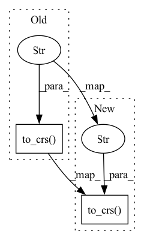

Pattern ID :35263
Before Change
@property
def meter_length(self) -> float:
Returns length of polygon in meters
return self.center._spherical_adjustment * self.to_crs("epsg:3857" ) .length
@property
def coords(self) -> np.ndarray:After Change
@property
def meter_length(self) -> float:
Returns length of polygon in meters
return self.center._spherical_adjustment * self._geoseries.to_crs("epsg:3857" ) [0].length
@property
def coords(self) -> np.ndarray:In pattern: SUPERPATTERN
Frequency: 3
Non-data size: 2
Instances Fragment ID: 100307626
Project Name: hmakelin/gisnav
Commit Name: ae84eedaa9388c8d9533b4f62c9a66396cb98e52
Time: 2022-06-20
Author: hmakelin@protonmail.com
File Name: python_px4_ros2_map_nav/nodes/geo.py
M Class Name: _GeoPolygon
N Class Name: _GeoPolygon
M Method Name: meter_length(1)
N Method Name: meter_length(1)
M Parent Class: _GeoObject
N Parent Class: _GeoObject
M File Name: python_px4_ros2_map_nav/nodes/geo.py
N File Name: python_px4_ros2_map_nav/nodes/geo.py
M Start Line: 103
M End Line: 103
N Start Line: 91
N End Line: 91
Before Change
:param crs: Coordinate Reference System (CRS) string (e.g. "epsg:4326")
// TODO: not accurate, need something else, epsg:3857-meters are only approximate meteres, especially away from equator
self._geoseries = center._geoseries.to_crs("epsg:3857" ) .buffer(radius).to_crs(crs).envelope
// TODO: Enforce validity checks instead of asserting
assert_len(self._geoseries[0].exterior.coords, 4 + 1)After Change
// TODO: use a precise conversion?
// Adjust epsg:3857 pseudo-meters with a simple spherical model, it is accurate enough, no ellipsoid needed
wgs_84_geoseries = center._geoseries.to_crs("epsg:4326" )
latitude = wgs_84_geoseries.y
spherical_adjustment = 1/np.cos(np.radians(latitude))
self._geoseries = wgs_84_geoseries.to_crs("epsg:3857").buffer(spherical_adjustment * radius).to_crs(crs).envelope
Fragment ID: 100307630
Project Name: hmakelin/gisnav
Commit Name: 65fec3fe5ca85bb62f83246b67ee9153b2041ba1
Time: 2022-06-03
Author: hmakelin@protonmail.com
File Name: python_px4_ros2_map_nav/data.py
M Class Name: GeoBBox
N Class Name: GeoBBox
M Method Name: __init__(4)
N Method Name: __init__(4)
M Parent Class: _GeoObject
N Parent Class: _GeoObject
M File Name: python_px4_ros2_map_nav/data.py
N File Name: python_px4_ros2_map_nav/data.py
M Start Line: 140
M End Line: 140
N Start Line: 141
N End Line: 144
Before Change
spherical_adjustment = 1/np.cos(np.radians(latitude))
assert_type(wgs_84_geoseries, GeoSeries)
assert_len(wgs_84_geoseries, 1)
self._geoseries = wgs_84_geoseries.to_crs("epsg:3857" ) .buffer(spherical_adjustment * radius).to_crs(crs).envelope
@lru_cache(4)
def get_coordinates(self, crs: str = _GeoObject.DEFAULT_CRS) -> np.ndarray:After Change
:param crs: Coordinate Reference System (CRS) string (e.g. "epsg:4326")
// TODO: spherical adjustment uses self.center property, which needs _geoseries defined! so what to do here?
self._geoseries = center.to_crs("epsg:3857" ) ._geoseries.buffer((1/center._spherical_adjustment()) * radius).to_crs(crs).envelope
@lru_cache(4)
def get_coordinates(self, crs: str = _GeoObject.DEFAULT_CRS) -> np.ndarray: Fragment ID: 100307628
Project Name: hmakelin/gisnav
Commit Name: e7a681efd463c108b0a3bd077f53593c4bc0af5c
Time: 2022-06-06
Author: hmakelin@protonmail.com
File Name: python_px4_ros2_map_nav/geo.py
M Class Name: GeoBBox
N Class Name: GeoBBox
M Method Name: __init__(4)
N Method Name: __init__(4)
M Parent Class: _GeoPolygon
N Parent Class: _GeoPolygon
M File Name: python_px4_ros2_map_nav/geo.py
N File Name: python_px4_ros2_map_nav/geo.py
M Start Line: 145
M End Line: 150
N Start Line: 151
N End Line: 151